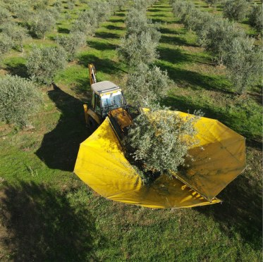

A fase 1 constrói a base comum do ecossistema e põe-lhe dentro as duas primeiras aplicações a funcionar com dados reais: os Recursos Humanos e o Ponto no telemóvel do operador, cruzado com as horas e a localização dos tratores no JDLink.

Construíste em 20 horas o que muitas empresas levam meses a desenhar. O que não existe ainda é o que transforma o desenho em peça: dados comuns, segurança e uma base que aguente o uso real.
Valor à hora, salário combinado, ajudas de custo, recibos verdes. Do dia 30 ao dia 15, a empresa fica parada nessa frente.
Os do RH não são os do Ponto nem os do programa de acessos. Cria-se a mesma pessoa três vezes, e perde-se o fio.
Os tratores marcam a área e as horas de motor, mas nada disso chega ao ponto do operador nem à obra.
Emails, WhatsApps, validações. A empresa responde à velocidade de uma pessoa, e essa pessoa és tu.
Os dias a vermelho são os que hoje vão para o fecho das horas e dos salários da agricultura.
"Se nós não fizermos um desenho que se possa transformar numa peça fabril, ele não é nada mais do que um boneco e um desenho."
Ricardo Luz, sobre as aplicações que já construiu, a 23/09
Recebemos ontem a "Visão do ecossistema" e o caderno de requisitos v99. A fase 1 não constrói tudo, e a tua visão diz isso mesmo. Mas a base nasce já preparada para o resto. Aqui está cada princípio, com o que lhe acontece nesta fase.
Tudo o que está aqui vem do teu caderno, com a secção de onde saiu. O que lá está e não aparece aqui está em "Fase seguinte", mais abaixo.
| Regra do teu caderno | Valor inicial | Comportamento |
|---|---|---|
| Trator ativo sem ponto de operador | imediato | Pergunta ao líder quem está a conduzir. Nunca atribui o operador pelo hábito. (C4.2) |
| Trator parado com ponto aberto | 2 horas | Avisa o operador; o fecho tardio pede a hora efetiva, nunca impõe a hora atual. (C4.2) |
| Diferença de horas operador e máquina | > 20% | O registo não entra na validação rápida: exige "Verificar". Máquina acima do operador é sempre incoerência. (C6) |
| Local da picagem | > 2 km | Do ponto de referência da herdade, ou da sede para quem não tem obra. Destaque no ecrã do líder. (C6, 46.1) |
| Entrada ou saída esquecida | pendente | O operador submete a hora efetiva; fica à espera do líder, com o registo anterior guardado. (C4.1) |
| Duas picagens sobrepostas | 1 vez | Conservam-se os originais, o líder corrige, as horas contam uma só vez. (C4.1) |
No limiar exato não dispara: "superior a 20%" quer dizer superior. Todos os valores são alteráveis nos parâmetros.
É a sequência da secção 28.4 do teu caderno. Carrega nos passos, ou deixa correr.
Simulação do percurso. Nomes, herdade, máquinas e leituras são ilustrativos.
Quatro situações do teu caderno. Repara na primeira: o sistema sabe que o trator está a trabalhar, e mesmo assim não adivinha quem o conduz.
Simulação. Na fase 1 estes avisos chegam como notificações da aplicação; nomes e números são ilustrativos.
O telemóvel do operador, o painel do líder, o Operations Center da John Deere e a Eticadata. A base no meio, com uma identidade para cada pessoa e cada máquina.
Prepara as variáveis e entrega o mapa. Retenções, descontos e recibos continuam na Eticadata, com a contabilista. As tuas regras de remuneração ficam como ela as validar.
Um trator parado ou uma viatura fora do local são indícios para perguntar. Nunca fecham um ponto nem descontam horas (28.4, ponto 17).
Não atribui o operador porque costuma ser ele, nem valida porque o líder costuma validar. Cada aprovação é uma ação de uma pessoa identificada.
Falta de sinal fica como indisponível ou atrasado, à vista de quem valida. Nunca como incumprimento (49.4).
Preferimos dizer isto agora do que prometer o que não se cumpre.
Está no teu caderno ou foi falado a 23/09, e não entra nos 10.000 €. Cada um com o seu valor, quando decidires.
A fórmula da secção 22, a conta de danos e a conservação trimestral. Assenta nas horas e nos hectares validados que a fase 1 começa a juntar.
Pedidos, preços por obra e por cliente, plafonds e faturação no Moloni, com o retorno dos recibos.
Custos por obra, manutenção, consumos e o fornecedor de GPS das viaturas, Quatenus ou outro, quando estiver escolhido.
O agente central e os assistentes por utilizador, e a comunicação ligada a cada processo.
A fatura fotografada que se lança sozinha e o organizador de emails com resumo diário.
O chão de fábrica dos tubos e o aluguer de equipamentos, sobre a mesma base comum.
Reuniões gravadas, notas automáticas, métricas de cada developer, e as faturas de despesas fotografadas num grupo que as lança no CRM, na Drive e no Moloni. O que te propomos é o que usamos todos os dias.
Três comerciais, cada um com o seu WhatsApp e a sua carteira: "cada comercial era uma ilha". Passaram a uma operação centralizada, com visibilidade total para a gestão. O mesmo problema das tuas aplicações soltas, noutro setor.
Caso publicado em aisolutions.pt.
A fase 1 ataca a origem desses dias: as horas deixam de ser reconstruídas a partir de papéis e mensagens, e passam a chegar ao fecho do mês já validadas pelo líder, com obra, trator e hectares.
Começamos pelos RH e pelo Ponto, porque é aí que estão os 15 dias. O JDLink entra quando a John Deere aprovar a ligação de produção; até lá, os hectares declarados no fecho já fazem o seu trabalho.
Disseste que, com as coisas preparadas, fechavas nesta reunião. Estão aqui. Três passos até à primeira semana.
Por WhatsApp ou por email, com as dúvidas que ainda tenhas.
O âmbito, os valores, as entregas e as condições de propriedade desta página, para assinar.
A organização no Operations Center, a versão da Eticadata e o contacto do revendedor, e as listas de colaboradores, obras e tratores.
Manuel Condeço, AI Solutions
+351 964 251 889 ou manuel.condeco@aisolutions.pt